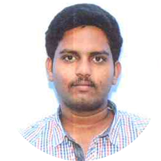

|  |
Pyreddy.SivaKumarReddystudent of Reva university. B.tech-ECE Mobile: +91- 9502388163 Email: sivakumarreddy247@gmail.com |
A responsible position that will challenge my present experience and potential and which will satisfy my ever increasing quest for knowledge.
| School/College | Qualification | University | YearCompleted | Percentage |
| Reva University | B.TECH(ECE) | Reva University | Persuing 6th Semister | 7.99 |
| Narayana Junior College | Intermediate | Board Of Intermediate Education | 2017 | 96.3 |
| Montessori High School | SSC | Board Of SSC Education | 2015 | 9.2 (GPA) |
Full name : Pyreddy Siva Kumar Reddy
Father’s name : P. Narayanan Reddy
Mother’s name : P.Nitya Lakshmi
Date of Birth : 24-07-1999
Marital Status : Single
Nationality : Indian
Languages known : English, Hindi, Telugu